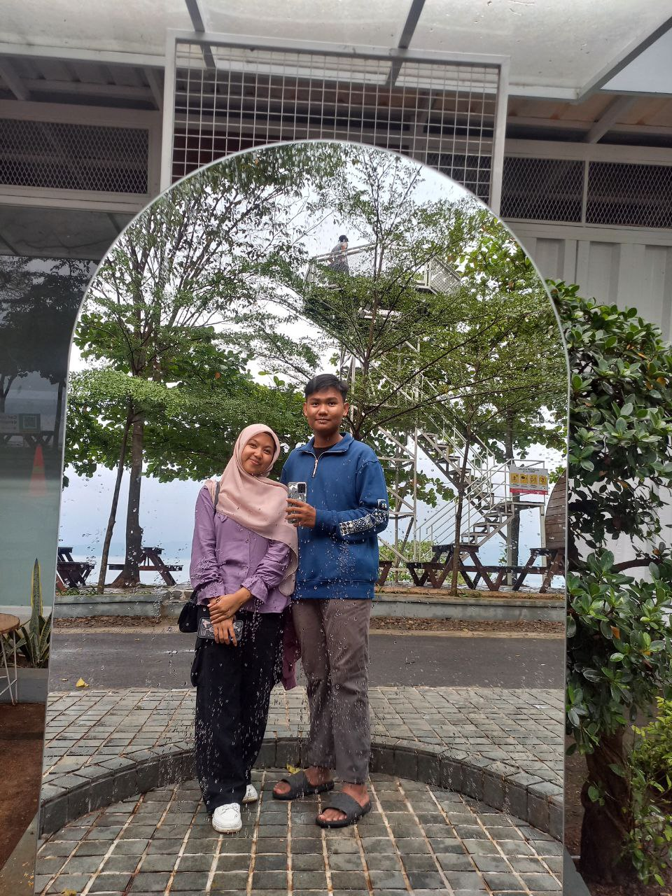
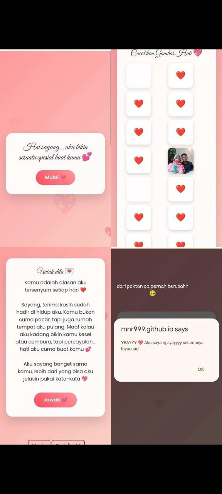

Our Love
Naufal & Aidila ❤️
"Dua manusia, satu perjalanan.
Dua hati, satu tujuan.
Dan satu cinta yang akan terus hidup selamanya."

Loading Our Love Story...
"Dua manusia, satu perjalanan.
Dua hati, satu tujuan.
Dan satu cinta yang akan terus hidup selamanya."
"Kami adalah dua jiwa yang dipertemukan oleh takdir. Dari pertama bertemu, kami tahu bahwa ini adalah awal dari sesuatu yang indah. Setiap hari adalah anugerah. Setiap momen bersama adalah kenangan yang tak terlupakan. Kami melanjutkan perjalanan ini bersama, tangan dalam tangan, hati yang bersatu."

Cowok ganteng dengan hati yang penuh kasih.

Cewek manis dengan senyum yang memikat.
5 Mei 2025
11 Oktober 2007
28 September 2007

20 April 2025
"Semua berawal dari pertemuan sederhana. Tatapan pertama yang biasa saja, tapi entah kenapa terasa berbeda. Dari situ, cerita kita mulai ditulis."

12 Mei 2025
"Hari pertama kita bertemu, aku belum tahu kalau kamu akan jadi alasan bahagiaku setiap hari setelahnya."

28 September 2025
"Hari di mana seseorang yang paling berharga dalam hidupku dilahirkan. Dunia mungkin biasa saja hari itu, tapi bagiku… semesta sedang menyiapkan kebahagiaan yang suatu hari akan aku temui."

11 Oktober 2025
"Di hari ini, lahirlah seseorang yang kelak akan jadi alasan bahagiaku. Terima kasih sudah hadir di dunia dan memilih untuk mencintaiku."

14 Februari 2026
"Valentine bukan cuma soal cokelat dan bunga, tapi tentang kamu yang selalu jadi alasan aku merasa dicintai setiap hari. Terima kasih sudah memilihku."
❤️ Lihat website Valentine
8 Maret 2026
"Dari sekian banyak momen di bulan ini, yang paling aku tunggu adalah berbuka puasa bareng kamu. Karena hadirnya kamu selalu bikin momen sederhana terasa istimewa."

21 Maret 2026
"Dari sekian banyak momen di bulan ini, yang paling aku tunggu adalah berbuka puasa bareng kamu. Karena hadirnya kamu selalu bikin momen sederhana terasa istimewa."

18 April 2026
"Dari semua waktu yang berjalan di hidup ini, timezone favoritku selalu tentang kamu. Karena setiap detik bareng kamu selalu terasa lebih hangat, lebih indah, dan lebih berarti."

18 April 2026
"Dari sekian banyak momen yang kita lewatin, yang paling aku suka adalah foto bareng kamu di photobooth ini. Karena sesederhana apa pun momennya, kalau ada kamu semuanya selalu terasa istimewa"

25 April 2026
"Senang rasanya bisa melihat kamu akrab dan tertawa bersama keluargaku entah kenapa, rasanya seperti semuanya terasa lebih lengkap saat ada kamu di tengah mereka."

5 Mei 2026
"Terima kasih sudah hadir dan bertahan sejauh ini.Banyak hal berubah selama perjalanan kita, tapi satu yang selalu sama: rasa nyaman setiap kali ada kamu.Semoga kita selalu diberi alasan untuk tertawa bersama, saling menguatkan, dan terus berjalan ke depan tanpa saling melepaskan."

13 Mei 2026
"Untuk kamu yang hari ini wisuda Jangan lupa bangga pada dirimu sendiri.Karena tidak semua orang mampu melewati proses panjang dengan penuh sabar seperti kamu.Semoga setiap langkahmu setelah ini selalu dipermudah dan dipenuhi keberuntungan."
30 Mei 2026
“Dari sekian banyak momen yang kita lewatin, yang paling aku suka adalah waktu kita main ke Talaga Biru bareng. Karena sesederhana apa pun momennya, kalau ada kamu semuanya selalu terasa lebih indah dan istimewa ”
Nama Penyanyi
"Aku ingin menghabiskan sisa hidupku bersamamu. Maukah kamu menjadi pasangan hidupku?"
Terima kasih sudah menerima aku dalam hidupku. Aku janji akan mencintaimu selamanya. Sekarang dan selamanya! ❤️